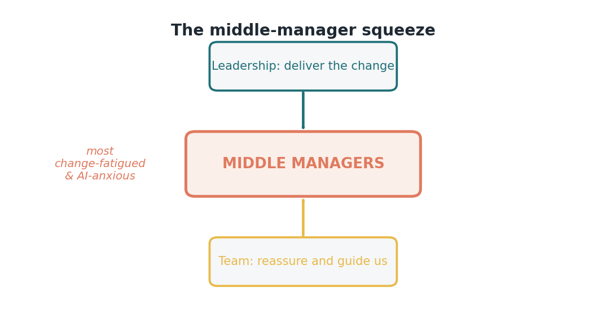

Issue 14 — The middle-manager squeeze: leading a team through the unknown
I want to write directly to our middle managers for a moment, though I hope everyone reads it, because understanding this helps the whole team. If you manage people in the middle of our organization right now, you are sitting in the hardest seat in this entire change, and I don't think we say that often enough. So let me say it plainly: we see you, and this issue is for you.
Here's the squeeze. From above, leadership is asking you to deliver a change you didn't design and can't fully see the end of. From below, your team is looking to you for reassurance and answers you may not have yet. You're expected to project confidence about a future you're privately uncertain about, while doing your own job, and managing your own version of the four fears. The research is clear that middle managers carry the heaviest burden in transformations — they're the most change-fatigued and the most AI-anxious group of all. If that's you, your exhaustion isn't weakness. It's the natural result of the position.

I want to offer something freeing, drawn straight from the change-leadership issue: you do not have to pretend to have the answers. The most powerful thing you can say to your team is the honest thing — "I don't know exactly where this goes, but I'm learning it alongside you, and we'll figure it out together." That sentence doesn't make you look weak. It makes you trustworthy, and it takes the impossible weight of false certainty off your shoulders. You were never supposed to carry that; nobody has the full map.
What you do need, and what we owe you, is support — and it's specific. Permission to be a learner, not an oracle. Protected time to actually build your own understanding, not just relay memos. Peer circles where you can be honest with other managers who are in the same squeeze. And fewer, clearer priorities from above, so you're not translating five competing mandates into one confused team. If you're a manager, it's okay to ask for these things. If you're a senior leader, it's our job to provide them, first.
And to the team members reading this who don't manage anyone: you can help your manager more than you know. Extending them a little patience, sharing what you learn instead of waiting to be taught, being honest about your own fears rather than making them guess — all of it lightens a load that's heavier than it looks from the outside. The squeeze eases when it's shared, and everyone can take a corner of it.
So this issue is really a thank-you. To the people holding steady in the middle while being pulled from both directions: what you're doing is hard, it matters enormously, and it's the reason a change like this reaches real people at all. You don't have to be certain. You just have to keep showing up, learning out loud, and caring about your team — which is exactly what you're already doing.
Sources
- Middle managers carry the heaviest burden, most change-fatigued and AI-anxious — McKinsey (Aug 7, 2026).
- Change leadership stance ("learning alongside you") — McKinsey (2026).